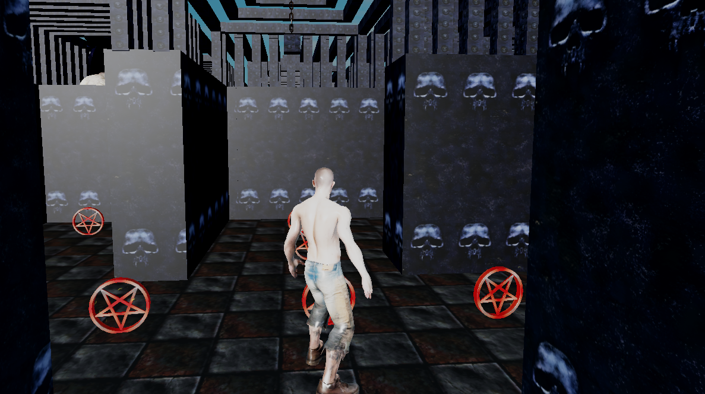

MAKAJLER
Gra Pact of REMEDIUM
STRONA GŁÓWNA
Gra stworzona(5/23/2025) przez studio Pac-Streamer-PVP którego właścicielem jest Makajler.
Obecnie gra znajduję się, na platformie Roblox


Produkt ten został pokazany tylko w wersji beta.

Niestety projekt został porzucony(6/7/2025).